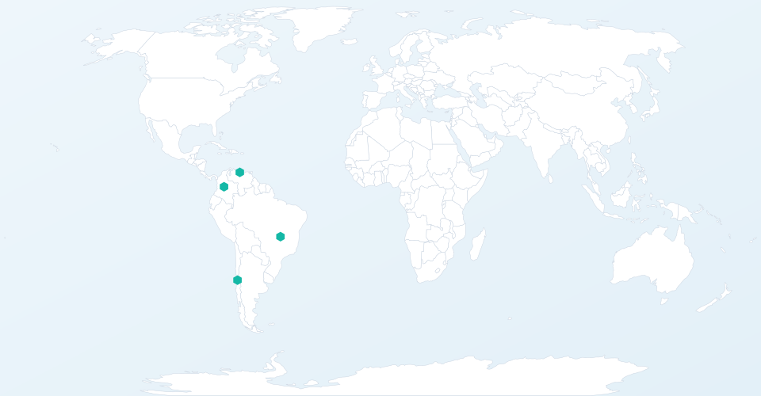

Telemetry · Analysis · Routing · Security · Link
A plataforma de inteligência de rede para provedores de internet
Automatize a detecção e mitigação de problemas de roteamento, proteja sua rede contra DDoS e otimize o tráfego com telemetria em tempo real — tudo em uma única plataforma.
Resultados comprovados para ISPs na América Latina
0%
Redução em custos operacionais
0%
Melhoria na performance de roteamento
0%
Mitigação de tentativas de ataque DDoS
24/7
Monitoramento e suporte especializado
Presença
Clientes em toda a América Latina
ISPs no Chile, Colômbia, Venezuela e Brasil confiam na Tarsel para proteger e otimizar suas redes.

🇨🇱 Chile
🇨🇴 Colômbia
🇻🇪 Venezuela
🇧🇷 Brasil
Clientes ativos
Clientes
Empresas que confiam na Tarsel
Empresas de todo o mundo utilizam nossa plataforma para proteger e otimizar suas redes.